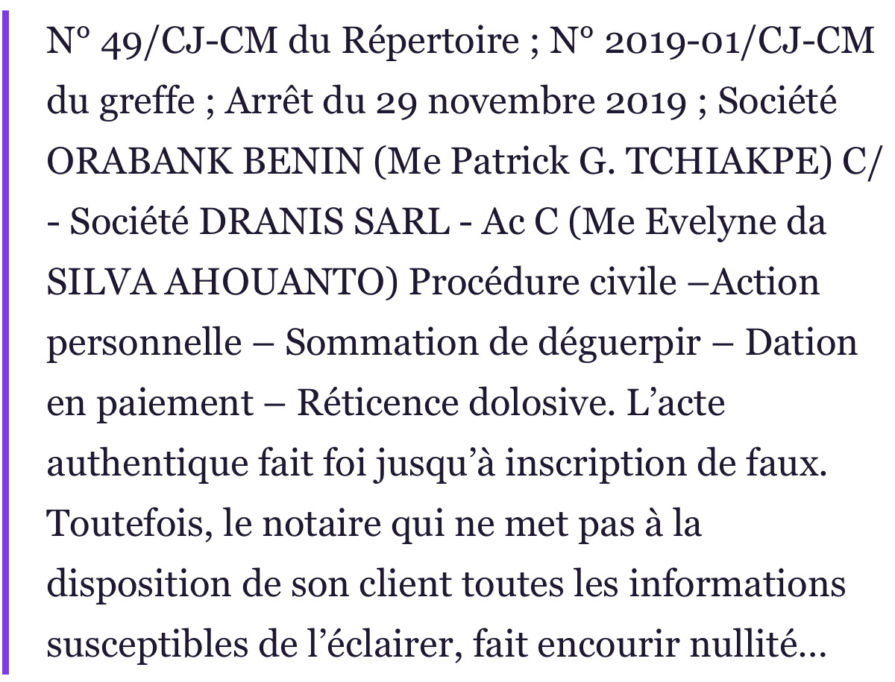
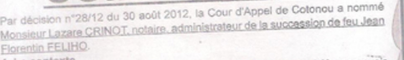
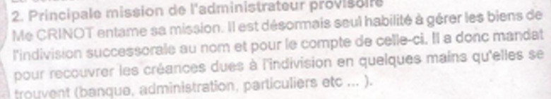
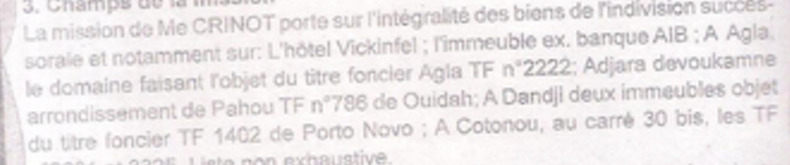
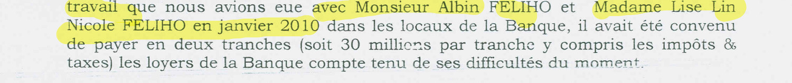
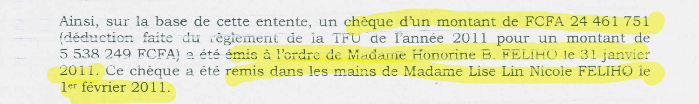
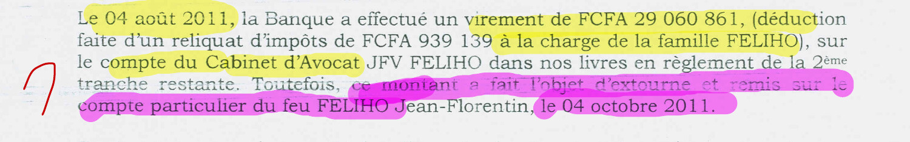
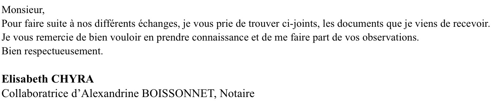

Prologue — L'acte qui devait tout prouver

Certificat d'acquit de droit, 20 octobre 2016 (P6)
Date de décès : 10 juin 2016.
Date réelle : 3 décembre 2010.
5 ans et 6 mois d'écart
Erreur de plume, ou mécanique ?
Acte 1 — L'officier public et l'intention
Statut du notariat · loi n° 2002-015 du 30 décembre 2002
Art. 1er
chargé « d'assurer la date de ces actes et contrats, d'en conserver le dépôt »
loi 2002-015, p. 2
Art. 33
serment : « Je jure de remplir mes fonctions avec exactitude et probité »
loi 2002-015, p. 7
Art. 47
responsabilité disciplinaire et pénale pour les fautes commises dans son ministère
loi 2002-015, p. 8
Obligation de
vérification renforcée
vérification renforcée
Acte 1 — L'obligation d'information

Cour suprême du Bénin, arrêt n° 49/CJ-CM du 29 novembre 2019 : sommaire
Cour suprême du Bénin · arrêt n° 49/CJ-CM · 29 novembre 2019
ORABANK BENIN c/ DRANIS SARL
« L'acte authentique fait foi jusqu'à inscription de faux. Toutefois, le notaire qui ne met pas à la disposition de son client toutes les informations susceptibles de l'éclairer, fait encourir nullité à son acte. »
Si le mandat existait, Gilles FÉLIHO était le client : la communication des actes lui était due.
Acte 1 — La connaissance objective
Certificat de décès · signé le 6 décembre 2010P1
3 décembre 2010
Jean Florentin FÉLIHO, décédé à Cotonou
PV de lecture du testament · audience du 24 avril 2012P2
3 décembre 2010
« décédé à Cotonou le 03 décembre 2010 »
Jugement n° 114/14 · 31 octobre 2014P5
3 décembre 2010
« décédé le 03 décembre 2010 à Cotonou »
Certificat d'acquit de droit · 20 octobre 2016P6
10 juin 2016
« décédé à Cotonou le dix juin deux mil seize »
Trois sources indépendantes. Une seule date.
Une seule contredit les autres.
Une seule contredit les autres.
Acte 1 — L'effet juridique de la fausse date
Date réelle du décès : 3 décembre 2010
3 juin 2011
fin du délai de 6 mois
fin du délai de 6 mois
10 août 2016 · enregistrement
5 ans et 2 mois de retard
5 ans et 2 mois de retard
Délai légal : 6 mois (CGI, art. 438)
Date portée au certificat : 10 juin 2016
2 mois : dans le délai
La fausse date ne corrige pas une simple erreur :
elle fait disparaître le retard.
elle fait disparaître le retard.
Loi n° 64-35 · art. 509, § 4à vérifier
Le certificat d'acquit est le préalable des inscriptions foncières.
Acte 2 — L'engrenage des contradictions
1
Mandataire
2016
Mandataire
2016
2
Tiers non partie
2023
Tiers non partie
2023
3
Exécution partielle
2025
Exécution partielle
2025
4
Décision de justice
2024
Décision de justice
2024
Chaque pignon enclenche le suivant.
Chacun bloque le précédent.
Chacun bloque le précédent.
Acte 2 — Pignon 1
Pignon 1 — Mandataire
2016
2016
Certificat d'acquit de droit, 20 octobre 2016 (P6)
Mandat donné ?
Aucun
Gilles FÉLIHO n'a jamais donné mandat
et n'a jamais consenti à cette mention.
et n'a jamais consenti à cette mention.

Statut du notariat, art. 61 : procurations annexées ou déposées au rang des minutes
PROCURATION
aucune signature · aucune date · aucun dépôt

Mise en demeure du 28 mai 2025 (P15) — preuve écrite du mandat demandée
Aucune réponse.
Acte 2 — Le communiqué de 2013

Communiqué de la succession, La Nation, 3 avril 2013 (P4)

Communiqué (P4) : mission de l'administrateur provisoire
2013 · Communiqué (P4)P4
Maître Lazare CRINOT, administrateur : « seul habilité à gérer les biens »
Le notaire Félix BALLEY n'y figure pas.
Le notaire Félix BALLEY n'y figure pas.
2016 · Certificat (P6)P6
Le notaire Félix BALLEY : « agissant en qualité de mandataire et au nom des héritiers »
?
Où est le mandat ? Où est la décision qui l'autorise ?
Acte 2 — Pignon 2
Pignon 2 — Tiers non partie
2023
2023
Certificat d'acquit · 2016P6
Gilles FÉLIHO : représenté par un mandataire
Lettre du notaire Félix BALLEY · 7 sept. 2023P9

Gilles FÉLIHO : étranger aux actes — « il n'est pas partie »
S'il est représenté, il est partie à l'acte.
S'il n'est pas partie, le mandat n'existe pas.
S'il n'est pas partie, le mandat n'existe pas.
Acte 2 — Pignon 3
Pignon 3 — Exécution partielle
2025
2025

PV d'audition du 19 mars 2025, Brigade criminelle, p. 5/5 (P11)

PV d'audition du 19 mars 2025, p. 2/5 (P11) : « sauf lui »
Code des personnes et de la famille
Art. 940 : exécuteur nommé par le testateur
Aucune désignation produite
Aucune désignation produite
Art. 941 : saisine limitée aux meubles, un an et un jour
Décès : 2010
Enregistrement de la déclaration : 2016
Plus de 5 ans et demi après le décès
Enregistrement de la déclaration : 2016
Plus de 5 ans et demi après le décès
Aucun acte de disposition établiP13 · P14
Parcelle B du lot 488 : inconnue de la Mairie de Cotonou et de l'IGN.
Pièce de 2007 : lot 923, antérieure au décès.
Pièce de 2007 : lot 923, antérieure au décès.

Constat d'huissier du 29 juillet 2022 (P12) : un appartement loué par une société tierce
Le bail n'est pas produit.
Acte 2 — Pignon 4
Pignon 4 — Décision de justice exécutoire
2024
2024

PV de séance de l'APDP, 19 juin 2024, p. 3/3 (P10)
Décision de justice ?
sans numéro · sans juridiction · sans dispositif
1. Quelle décision ?
2. Que dit son dispositif ?
3. Désigne-t-elle le notaire Félix BALLEY ?
2. Que dit son dispositif ?
3. Désigne-t-elle le notaire Félix BALLEY ?
Jugement n° 114/14 · 31 octobre 2014P5
« Constate » · déclare la demande irrecevable.
Aucun ordre adressé à un notaire. Le notaire Félix BALLEY n'y figure pas.
Aucun ordre adressé à un notaire. Le notaire Félix BALLEY n'y figure pas.
Invoquer une décision ne vaut pas produire un titre.
Acte 2 — La boucle de verrouillage
Procuration
Acte dont il serait partie
Désignation d'exécuteur
Décision de justice
FERMÉ
FERMÉ
FERMÉ
FERMÉ
Chaque position écarte le contrôle
qui devait vérifier la précédente.
qui devait vérifier la précédente.
Acte 2 — Le refus d'accès
Lettre du 7 septembre 2023 (P9) : confidentialité, absence d'ordonnance judiciaire

Statut du notariat, art. 82 : l'ordonnance ne vise pas les intéressés en nom direct, héritiers ou ayants droit
Gilles FÉLIHO
Héritier
Pas d'ordonnance requise (art. 82)
La lettre du 7 septembre 2023 n'est pas un événement distinct
du prétendu mandat : elle en est le révélateur.
du prétendu mandat : elle en est le révélateur.
Acte 3 — La preuve de l'intention
Certificat de décès · P1P1
3 décembre 2010
PV de lecture du testamentP2
3 décembre 2010
Jugement n° 114/14P5
3 décembre 2010
3 décembre 2010
Certificat d'acquit de droit · 20 oct. 2016P6
10 juin 2016

PV d'audition du 19 mars 2025, p. 2/5 (P11) : le notaire Félix BALLEY invoque le jugement du 31 octobre 2014

Jugement n° 114/14, p. 6 (P5) : décès le 3 décembre 2010
Ces pièces étaient accessibles avant l'inscription.
Il ne s'agit pas de supposer une intention, mais de constater que la vérification était possible.
Il ne s'agit pas de supposer une intention, mais de constater que la vérification était possible.
Acte 3 — L'utilité de la fausse date
Avec la date portée au certificat · P6
10 juin 2016
2 mois
dans le délai de 6 mois (art. 438)
Avec la date réelle · P1, P2, P5
3 décembre 2010
5 ans et 2 mois
de retard

Courrier DGI du 6 janvier 2025, p. 2 (P7) : certificat « sollicité par l'Étude »

Courrier DGI, p. 2 (P7) : déclaration enregistrée au répertoire de l'Étude, n° 1428
D'où vient la date du 10 juin 2016 ? Mesure n° 4.
Acte 3 — Contestations et réponses
2024
2025
Contestations de Gilles Féliho
4 août 2023
Sommation de compulsion · P8
Sommation de compulsion · P8
2 oct. 2023
Plainte devant l'APDP
Plainte devant l'APDP
5 sept. 2024
Sommation interpellative
Sommation interpellative
28 mai 2025
Mise en demeure · P15
Mise en demeure · P15
7 sept. 2023
Lettre du notaire Félix BALLEY · P9
Lettre du notaire Félix BALLEY · P9
27 déc. 2023
Réponse à l'APDP
Réponse à l'APDP
19 juin 2024
Audience APDP · P10
Audience APDP · P10
6 janv. 2025
Observations DGI · P7
Observations DGI · P7
19 mars 2025
Audition Brigade criminelle · P11
Audition Brigade criminelle · P11
Dans les pièces du dossier, aucune rectification de la date du 10 juin 2016 n'est produite.
Acte 3 — La qualification pénale
Ancien code pénal (code Bouvenet), applicable en 2016
Le Code pénal de 2018 n'est pas rétroactif (art. 6) · textes à vérifier sur le texte officiel
Art. 145
Faux commis par un officier public dans une écriture publique
À vérifierP6
Art. 146
Constater comme vrais des faits faux, ou comme avérés des faits qui ne l'étaient pas
À vérifierP6, P7
Art. 148
Usage de l'acte faux
À vérifierP7, P11
Art. 153-154
Certificat inexact · document obtenu par fausse qualité (numérotation à vérifier)
À vérifierP6, P8
Ce que la loi exige
Altération frauduleuse de la vérité · écrit protégé · préjudice possible
L'intention doit être établie.
C'est l'objet de l'enquête sollicitée.
Acte 3 bis — Les quatre chefs de préjudice
Usage
du nom
du nom
Préjudice
successoral
successoral
Mémoire
du défunt
du défunt
Perte
de chance
de chance
Gilles Sixte FÉLIHO
Ils ne s'additionnent pas seulement : ils se renforcent.
Acte 3 bis — Les quatre chefs de préjudice
Code des personnes et de la famille · art. 13
« L'usage abusif d'un nom patronymique et de tous autres éléments d'identification de la personne engage, s'il y a préjudice, la responsabilité de l'auteur de l'abus. […] Après son décès, ce même droit appartient à sa veuve ou à ses descendants. »
Certificat d'acquit de droit, 20 octobre 2016 (P6)
Signature de Gilles FÉLIHO : aucune · mandat : aucun
Juridique
Engagé sans consentement dans une déclaration successorale
Patrimonial
Exposé à des sanctions fiscales à vérifier (art. 509, loi n° 64-35)
Moral
Apparaît associé à une déclaration dont les valeurs sont contestées
Un mandat suppose le consentement du mandant (art. 1984 du Code civil). Aucun mandat n'a été produit.
Acte 3 bis — Les quatre chefs de préjudice
Certificat d'acquit · 20 octobre 2016P6
Gilles FÉLIHO : représenté par un mandataire
Lettre du notaire Félix BALLEY · 7 septembre 2023P9
Gilles FÉLIHO : « n'est pas partie » aux actes demandés
Ces deux écrits ne peuvent pas être vrais ensemble.
Si le mandat existait
Le notaire Félix BALLEY devait à son mandant la communication des actes (art. 82 : l'héritier la reçoit sans ordonnance).
Refus : violation.
Refus : violation.
Si le mandat n'existait pas
La mention portée au certificat, « agissant en qualité de mandataire et au nom des héritiers », est fausse.
Dans les deux hypothèses, une faute est identifiée — et le préjudice en découle.
Acte 3 bis — Les quatre chefs de préjudice
Jugement · P5Certificat · P6Écart
Nombre d'immeubles397− 32 (− 82,05 %)
Valeur567 990 000 FCFA138 300 000 FCFA− 429 690 000 (− 75,65 %)
Réserve (2/3, art. 813)378 660 000 FCFA92 200 000 FCFA− 286 460 000 FCFA
Réserve héréditaire : 2/3 de la masse
Masse du jugement
Masse déclarée au certificat
Titre foncier d'Agla n° 2222P4 · P6
Cité par le communiqué du 3 avril 2013 (P4) : « A Agla, le domaine faisant l'objet du titre foncier Agla TF n°2222 ».
Absent du certificat (P6) : les titres fonciers déclarés sont 739, 3325, 2601, 786, 123, 158 et 1402.
Absent du certificat (P6) : les titres fonciers déclarés sont 739, 3325, 2601, 786, 123, 158 et 1402.

Acte 3 bis — Les quatre chefs de préjudice · l'indice AIB

Lettre AIB du 5 octobre 2011 : loyers en deux tranches de 30 millions, impôts et taxes compris

Lettre AIB : chèque de 24 461 751 FCFA (déduction de la TFU), remis le 1er février 2011

Lettre AIB : virement de 29 060 861 FCFA le 4 août 2011, « extourne » le 4 octobre 2011
Lot 240 · Camp Guézo
Certificat, P6 : immeuble du lot 240, Camp Guézo, estimé à 65 millions
Valeur déclarée (P6) 65 000 000 FCFA
Loyer 2011 (AIB) 60 000 000 FCFA
92 %
Un immeuble qui rapporte 60 millions par an ne peut pas valoir 65 millions : une impossibilité économique.
Acte 3 bis — Les quatre chefs de préjudice · la mémoire du défunt
Code des personnes et de la famille · art. 13, dernier alinéa
« Après son décès, ce même droit appartient à sa veuve ou à ses descendants, même s'ils portent un autre nom. »
3 décembre 2010
décès (P1, P2, P5)
décès (P1, P2, P5)
10 juin 2016
date portée au certificat (P6)
date portée au certificat (P6)
5 ans et 6 mois de vie en plus
L'indignité successorale (art. 595 et 596) n'est pas invoquée : elle vise un successible. L'atteinte est poursuivie sur l'article 13 et sur la responsabilité civile (art. 1382 du Code civil, à vérifier).
Acte 3 bis — Les quatre chefs de préjudice · l'entrave
Cour suprême du Bénin · arrêt n° 49/CJ-CM · 29 novembre 2019
« Le notaire qui ne met pas à la disposition de son client toutes les informations susceptibles de l'éclairer, fait encourir nullité à son acte. »
20 oct. 2016
Certificat délivré. Gilles FÉLIHO n'est pas informé par l'Étude.
24 mai 2018
Certificat reçu par courriel de l'office notarial de Vincennes (P8).
4 août 2023
Sommation de compulsion du répertoire (P8).
7 sept. 2023
Refus : confidentialité, absence d'ordonnance (P9).
FERMÉ
Les actes demandés lui sont refusés : il ne peut ni les consulter, ni vérifier le répertoire, ni agir utilement.
Acte 3 bis — Les quatre chefs de préjudice · le courriel du 24 mai 2018
Courriel du 24 mai 2018 : office notarial de Vincennes (P8)

« Pour faire suite à nos différents échanges, je vous prie de trouver ci-joints, les documents que je viens de recevoir. »
Pièce jointe : DOCUMENT FELIHO.pdf (2,2 Mo)
Courriel du 24 mai 2018P8
Expéditeur : Élisabeth CHYRA, collaboratrice d'Alexandrine BOISSONNET, notaire, office notarial de Vincennes.
Objet : PARTAGE FELIHO.
En première page du document joint : le certificat d'acquit de droit du 20 octobre 2016 (P6).
Objet : PARTAGE FELIHO.
En première page du document joint : le certificat d'acquit de droit du 20 octobre 2016 (P6).
Acte 3 bis — Les quatre chefs de préjudice · l'effet de cumul
P5 Usage du nom
P6 Écart de déclaration
P9 Entrave
AIB Valeur de l'immeuble
L'absence de mandat établit la fausseté de la mention. La fausseté de la mention caractérise le faux, sous réserve de l'intention.
Le faux explique l'écart de déclaration. Le refus de communiquer a prolongé l'entrave.
Chaque préjudice renforce les autres.
L'un des quatre suffit à tenir la demande.
L'un des quatre suffit à tenir la demande.
Acte 4 — Douze mesures d'instruction
12 mesures d'instruction
précises · vérifiables · contradictoires
Acte 4 — Les mesures sollicitées
1DGI : dossier de mutation intégral
2Procuration : original ou constat d'absence
3Expertise des écritures et signatures
4Traçabilité : source de la date
5Auditions : personnel de l'Étude
6Échanges électroniques
7Accès au jugement de 2014
8Actifs : notes d'évaluation
9Confrontation chronologique
10Expertise immobilière indépendante
11Loyers : lettre AIB et pièces comptables
12Rémunération du notaire Félix BALLEY
Mesure 1P6P7
DGI : dossier de mutation intégral
Déclarations, annexes, bordereaux, courriers et annotations internes détenus par la DGI.
Mesure 2P2P9P15
Procuration : original ou constat d'absence
L'original de la procuration, ou la constatation officielle de son absence dans les minutes et annexes.
Mesure 3P6P7
Expertise des écritures et signatures
Comparer écritures, signatures, dates et mentions : certificat, déclaration, répertoire, pièces transmises à la DGI.
Mesure 4P6P7P11
Traçabilité : source de la date
Identifier la personne qui a fourni la date du 10 juin 2016.
Mesure 5P11
Auditions : personnel de l'Étude
Auditionner le personnel de l'Étude qui a préparé ou transmis la déclaration.
Mesure 6P8P9
Échanges électroniques
Rechercher les échanges électroniques entre l'Étude, les héritiers et la DGI.
Mesure 7P5P11
Accès au jugement de 2014
Vérifier si le notaire Félix BALLEY a eu accès au jugement de 2014, au vu de ses propres déclarations.
Mesure 8P5P6
Actifs : notes d'évaluation
Produire toute note interne d'évaluation ou fiche de collecte des biens.
Mesure 9P8P9P10P15
Confrontation chronologique
Confronter les contestations de Gilles Féliho et les réponses du notaire Félix BALLEY.
Mesure 10P4P5P6
Expertise immobilière indépendante
Lot 240 et titre foncier d'Agla n° 2222 : valeur, titre et cohérence avec les actes officiels.
Mesure 11AIBP6
Loyers : lettre AIB et pièces comptables
Produire la lettre AIB du 5 octobre 2011 et toute pièce comptable établissant les loyers perçus pour le lot 240 (65 millions déclarés, 60 millions de loyer en 2011).
Mesure 12P5P6P7
Rémunération du notaire Félix BALLEY
Vérifier la rémunération perçue (émoluments, honoraires), sa conformité à la pratique, et son poids en pourcentage des valeurs immobilières estimées (138 300 000 FCFA déclarés ; estimations du jugement).
Acte 4 — La clé
Douze mesures. Une seule finalité :
établir la vérité.
établir la vérité.
Épilogue — La foi publique
La foi publique est la condition
de la confiance dans les actes.
de la confiance dans les actes.
Une enquête contradictoire.
Les pièces-mères. L'audition des personnes concernées.
Les pièces-mères. L'audition des personnes concernées.
Que la justice détermine l'origine,
l'étendue et la responsabilité des faits.
l'étendue et la responsabilité des faits.
Gilles Sixte FÉLIHO, requérant
Cotonou, le 9 octobre 2026
wadagni2026-verite.com